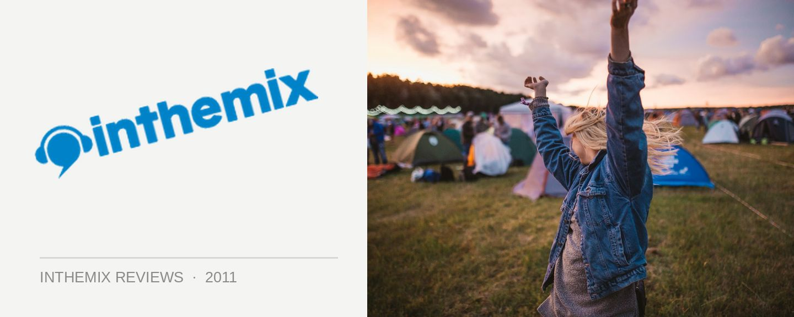

Harvest Festival @ Parrammatta Park, Sydney (13/11/2011)
In the past 12 months even the most enduring festival brands have suffered under the weight of the market realities for large-scale events in Australia. Crowds have considerably shrunk, with ‘festival fatigue’ arguably driven by the fact we’ve often been subjected to sub-par experiences as the events got bigger, but not necessarily better. However, what the recent Música festival in Sydney demonstrated was that demand still exists for a ‘boutique’ experience; essentially, what festivals felt like before they exploded in popularity.
Popping up amongst this in 2011 is Harvest Festival – a tour that’s managed to generate a fair amount of excitement, due mostly to the presence of UK veterans Portishead at the top of the bill, as well as a slew of other classy acts. A pet project of AJ Maddah, the notorious promoter responsible for the somewhat organisationally patchy, but still extraordinarily successful Soundwave tours, he’d partnered with renowned Irish promoter Declan Forde to make Harvest a reality. “We do feel that what we’re setting out to do with Harvest is different from other festivals, and that it will be a success both commercially and in terms of the quality and overall vibe of the events,” Forde told The Music Network earlier this year.
Entering the event via the Church Street end of Parramatta Park on Sunday, it’s quickly evident that Maddah and Forde have indeed made every effort to distinguish Harvest Festival from what we’re used to in Australia. Trees are the backdrop everywhere you look, meaning the venue is perfectly in tune with the titular theme that runs throughout the day, and walking in the first thing you see is ‘HARVEST’ spelt out in giant letters to your left, with other lettering and signposts scattered across the venue mapping out where you are, and where you’re going.
Where to start with all those little details? One of the stalls serving coffee and crepes on the way to the mainstage is staffed with a bunch of friendly lasses dressed up in French-themed costumes, who actually greet you in French – while a five-piece brass band performs on the roof. Varied costumed performers stalk the grounds, happily posing for photos with punters, and the art community is present in too many instances to mention – the organisers had actually put a tender for local artists to be involved on the day. My favourite moment is when several friendly folks walk up and hand me a round polystyrene ball on a paddlepop stick, with an eye painted on it – called an ‘eyescream’ apparently, I was assured it was an “art thing,” and it joins me on my travels for the rest of the day, the source of much silliness and “WTF” looks from other punters (if they aren’t carrying one around themselves).
Walking down the hill, you can see the ‘Great Lawn’ mainstage, and The Family Stone are capably warming things up as the remarkably relaxed and down-to-earth crowd mills around, dancing, sitting and watching, or otherwise chatting amongst themselves. Harvest has definitely attracted the right kind of discerning punter, and putting Family Stone on early in the arvo is programming perfection. They might lack the iconic Sly as frontman, but nonetheless, there’s zero doubt the collection of seasoned performers in front of us have centuries of performing experience between them. The sound is loud and crystal clear, meaning their cries of, “Keep funk alive!” are heard all the way back up the hill.
Strolling past the Great Lawn towards the further reaches of the venue, past the not so big ‘Big Red Tractor Stage’ that hosts the more leftfield electronic acts throughout the day (beginning with Warp signees PVT), it’s a little bit too close to the main stage to avoid sound bleed (pretty much the sole production gripe for the day). Another few minutes walk and you arrive at the secondary ‘Windmill’ mainstage, flanked by an actual windmill of course, and it’s time for Buffalo alt-rockers Mercury Rev. Again, a superb slice of programming, their blissful dream-like pop goes down a treat, with everyone again allowed the luxury of either throwing themselves into it, or otherwise relaxing on the grass.
They’ll only hold my attention for half their set though, as TV On The Radio are starting back at the Great Lawn. The band has overcome some heavy trials recently, losing bassist Gerard Smith to lung cancer around the release of their fifth album Nine Types of Light; but with how much gusto they throw into their performance, you wouldn’t know it. Over their last two superb albums we’ve seen them gradually bring a more polished, melodic musicality to their music, but their performance today more closely echoes the beautiful chaos I’ve associated with their earlier work. Unfortunately, this doesn’t blend so well with the sound bleed trickling in from the nearby Red Tractor stage – throwing in another off-key element just makes things too chaotic, but as mentioned, it’s the sole production gripe for the day.
Moving towards 5pm, it’s time to take a short break from the music and explore some of the other delights over near the festival entrance. Walking through a walled arch you enter the ‘Secret Garden’, a massive circular chillout spot with plenty of places to sit and recoup, with funk, soul and reggae tunes creating the vibe. Just next door is the ‘Bootleg Alley’ tent, hosting all manner of theatrical, burlesque, circus and other weird and wonderful alternative performers, who have no qualms with hopping down from the stage and running around the tent to try and encourage audience engagement (or otherwise scaring them off). Again, these spots are evidence of how much effort has gone into creating a different experience with Harvest Festival, and your only regret is not having enough time to enjoy them more.
Back over at the modest Red Tractor stage, Death In Vegas are pumping out some haunting, electro-psychedelic sounds, with Richard Fearless and co absolutely mesmerising the crowd as dusk sets in. As spine-tingling as the atmosphere is, we’re soon drawn to see The National who begin at the Great Lawn not long into their set. I was someone who admittedly found lead singer Matt Berninger’s melancholy vocals a little dreary at times, the The National translate to this setting with stunning effectiveness. Introspective on record perhaps, but on stage, their grandeur melts your heart. For me, as the sun sinks below the stage, it counts as the day’s finest moment.
Back down at the Windmill stage though, trouble is a brewing. Production issues (and a rather elaborate setup) mean The Flaming Lips are nearly an hour late to hit the stage, while countless roadies wander around the stage, tapping microphones and fiddling with guitar plugs. An uncomfortable restlessness builds in the crowd, and many give up and walk away. When they do finally hit the stage though, the spectacle is overwhelming - band members crawling out of the psychedelic visuals on the screens, and eons of giant colourful bouncing balloons and confetti descending over the crowd. For the amount of time we were kept waiting though, the band is frustratingly slow to get started, and frontman Wayne Coyne seems intent on telling us repeatedly how we should be getting into the spirit more. It’s poorly judged on his part when we’ve been kept waiting nearly an hour, and it makes all the spectacle seem more Spinal Tap than the down-to-earth band we all know Flaming Lips to be. Soon we walk way to get a good spot for Portishead.
Holding back their starting time while waiting for The Flaming Lips to finish their show, Portishead had insisted that every other stage be shut down while they were performing. An arrogant demand perhaps, but it’s an enviable position for any band to be in, to wield that much power. However, as soon as Beth Gibbons, Geoff Barrow and their cohorts hit the stage, it’s obvious why it’s necessary directive. It’s a performance that carries so much dark, brooding power that the crowd is overwhelmed at times, with the emotion and intensity ebbing and flowing freely, and they’re allowed the space to exactly that without any distractions. Beth Gibbons’ crushingly painful and beautiful voice is given the most focus, and her presence is truly gripping, with the band’s seminal Dummy album making up the majority of the tracklist.
The crowd is steely silent during Glory Box, mesmerised by Gibbons’ voice and nearly physically shaken as the industrial intensity of the song builds towards the middle; and then noticeably gasping as it drops back down to focus solely again on Gibbons’ unforgettable refrain. “I’m so tired of playing, playing with this broken arrow…” We’re thrown around again by the screaming intensity of Machine Gun, the song’s crushing mechanical refrain bashed out by Barrow on effects pads and illustrated on the giant screens above. Returning for an encore with a chilling rendition of Roads, in the end Portishead go well past their scheduled 10pm finish. They make for an undeniably emotional, and somewhat sinister ending to the day; though they’re miles apart from the overblown spectacle we’ve come to expect from our festival headliners, they couldn’t possibly have been better received by the crowd.
Harvest Festival’s debut visit to Sydney is definitely a memorable one - not only because of the stellar acts involved, but also due to the fact they’re given the space to breathe, instead of being crammed into an over-jammed lineup. But credit also goes to the down-to-earth crowd it attracts, the country feel of the surroundings, the superb production, and the amazing attention to detail invested in the setup. It appears there’s space for another entry into the Australian festival market after all.